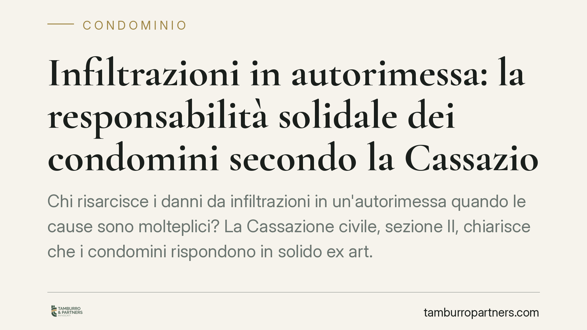

Infiltrazioni in autorimessa: chi paga i danni tra condomini
Quando un box auto subisce infiltrazioni provenienti da terrazze e parti comuni, chi risarcisce il danno? La Cassazione ribadisce che, in presenza di più concause, i responsabili rispondono in solido verso il danneggiato ai sensi dell'art. 2055 c.c. Una pronuncia che incide sia sulla posizione di chi subisce il danno sia su quella del condomino chiamato in causa.

Il caso
Un'autorimessa condominiale danneggiata da infiltrazioni idriche riconducibili a più fonti: terrazze in proprietà esclusiva e parti comuni sovrastanti. Il danneggiato agisce per il risarcimento. Il nodo è stabilire se debba individuare con precisione il singolo responsabile e citarlo obbligatoriamente in giudizio, oppure se possa rivolgersi ai condomini per l'intero.
La Cassazione Civile, Sez. II, conferma la responsabilità solidale dei convenuti per i danni derivanti da plurime concause. Gli estremi puntuali della pronuncia (numero e anno) sono verificabili nella banca dati di legittimità; il principio applicato è tuttavia consolidato e prescinde dalla singola decisione.
Inquadramento normativo
Il perno è l'art. 2055, comma 1, c.c.: "se il fatto dannoso è imputabile a più persone, tutte sono obbligate in solido al risarcimento del danno". Solidarietà significa che il danneggiato può pretendere l'intero risarcimento da uno qualsiasi dei responsabili, senza dover frazionare la pretesa in base ai singoli apporti causali.
Da qui la conseguenza processuale: non sussiste litisconsorzio necessario. In termini piani, il danneggiato non è obbligato a citare in giudizio tutti i corresponsabili insieme. Può convenirne anche uno solo, salvo il diritto di quest'ultimo di recuperare le quote altrui.
Entra qui il regresso (art. 2055, commi 2 e 3, c.c.): chi ha pagato l'intero può rivalersi sugli altri responsabili in proporzione alle rispettive colpe e alle conseguenze derivate. La ripartizione interna, in caso di dubbio, si presume paritaria.
Il nodo terrazza a livello e lastrico solare
Nella materia infiltrazioni il punto interpretativo più delicato riguarda la ripartizione interna delle spese di riparazione. L'art. 1126 c.c. disciplina il lastrico solare (e la terrazza a livello) di uso esclusivo: le spese di riparazione o ricostruzione gravano per un terzo sul titolare del diritto d'uso esclusivo e per due terzi sui condomini dell'edificio o della porzione che il lastrico copre.
Questo criterio non incide sulla solidarietà verso l'esterno — il danneggiato resta libero di pretendere l'intero — ma governa la fase interna. In sede di regresso, il condominio che abbia risarcito il danno recupererà dal proprietario della terrazza secondo la proporzione dell'art. 1126, quando il danno derivi dalla mancata manutenzione della copertura a uso esclusivo. È la cerniera tra responsabilità esterna solidale e ripartizione interna delle quote.
Implicazioni pratiche
Le conseguenze cambiano a seconda della posizione occupata.
Per chi subisce il danno (proprietario del box, esercente dell'autorimessa): la pretesa risarcitoria può essere indirizzata anche verso un solo corresponsabile solvibile, senza l'onere di ricostruire in giudizio l'intero quadro delle responsabilità. Ciò semplifica l'azione ma richiede una solida prova del danno e del nesso causale.
Per il condomino convenuto: rispondere in solido significa poter essere chiamato a pagare l'intero, salvo poi agire in regresso verso gli altri. La quota effettivamente sopportata dipenderà dall'applicazione dei criteri interni, tra cui l'art. 1126 c.c. per le coperture a uso esclusivo. La posizione del proprietario della terrazza a livello va quindi valutata con attenzione, perché la sua esposizione interna può risultare significativa.
Cosa fare in concreto
- Documenta subito il danno: fotografa le infiltrazioni, gli aloni e i beni danneggiati, con data certa. La prova visiva è il primo presidio in un eventuale contenzioso.
- Richiedi una perizia tecnica che individui l'origine delle infiltrazioni e le concause. È il documento che orienta sia la responsabilità sia la ripartizione interna.
- Invia una PEC all'amministratore segnalando il danno e chiedendo l'intervento urgente sulle parti comuni e sulle coperture interessate.
- Apri il sinistro sulle polizze coinvolte. È opportuno verificare tempestivamente le coperture condominiali e individuali, per non incorrere in decadenze legate ai termini di denuncia.
- Valuta la strategia in base al ruolo: chi subisce il danno considera contro chi agire; il condomino convenuto imposta fin da subito le difese e l'eventuale chiamata in regresso.
La solidarietà tutela il danneggiato, ma non cancella la questione delle quote interne: chi paga per tutti deve poter recuperare, e la misura del recupero dipende dai criteri legali di ripartizione.
---
Contributo informativo a cura di Tamburro & Partners Avvocati. Non costituisce parere legale.
Ogni condominio ha una storia a sé.
Se gestisci un'amministrazione e vuoi un confronto su una specifica questione condominiale, scrivi allo studio. Ti rispondiamo entro un giorno lavorativo.